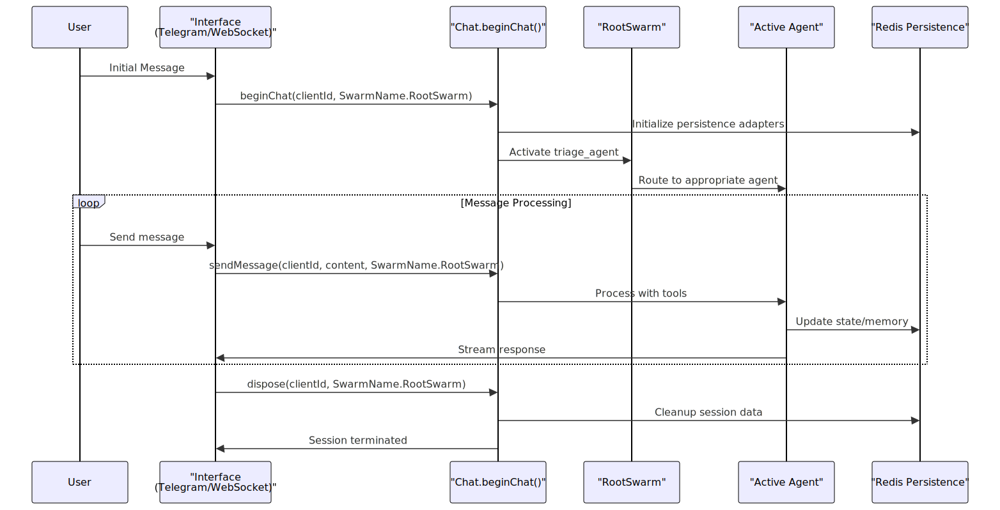

The AI Agent Swarm System provides conversational AI consultation for cryptocurrency trading through a coordinated network of specialized agents. This system uses the agent-swarm-kit framework to orchestrate multiple AI agents that can handle different cryptocurrencies, analyze market data, and provide trading recommendations. The system supports both Telegram bot interactions and web-based chat sessions.
For information about the signal processing pipeline that agents use for market analysis, see Signal Processing Pipeline. For details about the web server and API endpoints that support the chat interfaces, see Web Services and External Integrations.
The system is built on the agent-swarm-kit framework, which provides the core agent orchestration, conversation management, and persistence capabilities. The framework is configured with Redis-based persistence adapters for all agent state management.
The main framework configuration is established in src/config/setup.ts, where global settings are applied:
setConfig({
CC_PERSIST_EMBEDDING_CACHE: true,
CC_KEEP_MESSAGES: 50,
CC_MAX_NESTED_EXECUTIONS: 20,
});
The system implements a custom ChatInstance adapter that prevents concurrent message processing using the singlerun decorator src/config/setup.ts.

The system implements comprehensive Redis-based persistence for all agent-swarm-kit components. Each adapter follows a consistent pattern with Redis key namespacing and TTL management:
| Adapter Type | Redis Key Pattern | TTL | Purpose |
|---|---|---|---|
| History | history:{clientId}:messages |
900s | Chat message history |
| ActiveAgent | swarm:{swarmName}:active_agent:{clientId} |
None | Current active agent |
| NavigationStack | swarm:{swarmName}:navigation_stack:{clientId} |
None | Agent navigation history |
| State | state:{stateName}:{clientId} |
None | Agent-specific state |
| Storage | storage:{storageName}:{clientId} |
None | Agent storage |
| Memory | memory:{memoryName}:{clientId} |
None | Agent memory |
| Policy | policy:{swarmName}:{policyName} |
None | Swarm policies |
| Alive | alive:{swarmName}:{clientId} |
600s | Session keepalive |
| Embedding | embedding:{embeddingName}:{stringHash} |
604800s | Vector embeddings cache |
The system implements several types of specialized agents, each with specific roles and capabilities within the swarm.

Each cryptocurrency consultant agent follows a standardized pattern with identical system prompts and tool configurations, specialized only for their specific cryptocurrency:
btc_consultant_agent) - Specializes in Bitcoin analysis and recommendationseth_consultant_agent) - Focuses on Ethereum market analysisbnb_consultant_agent) - Handles Binance Coin trading strategiessol_consultant_agent) - Provides Solana-specific consultationxrp_consultant_agent) - Specializes in XRP analysisAll consultant agents share the same core capabilities:
The signal_agent serves as an internal market analysis tool that processes professional trading reports and generates buy/wait recommendations. Unlike consultant agents, it focuses on binary decision-making rather than conversational consultation.
Key characteristics:
grok_mini_completion (non-streaming) for decisive responsestrade_recommend_buy and trade_recommend_waitThe swarm system supports multiple communication channels for user interaction, each with specific client ID patterns and message handling.

The Telegram interface implements a bot that handles text messages and provides cryptocurrency consultation. The bot configuration includes:
/start with optional symbol parametersClient ID pattern: telegram-{chatId} src/main/telegram.ts
The WebSocket interface provides real-time communication for web-based chat applications:
/session/:chatIdClient ID pattern: web-{chatId} src/routes/session.ts
Each agent in the swarm has access to a comprehensive set of tools for market analysis and navigation. The tools are consistently implemented across all cryptocurrency consultant agents.
All consultant agents share the same set of market analysis tools:
| Tool Name | Description | Parameters |
|---|---|---|
fetch_short_range_ema_signals |
EMA signals for 8-hour analysis | None |
fetch_swing_range_macd_signals |
MACD signals for 2-3 day analysis | None |
fetch_long_range_rsi_signals |
RSI signals for 1-week analysis | None |
fetch_volume_data_sma_signals |
SMA volume analysis for stop-loss calculation | None |
fetch_mastodon_news_signals |
Social media sentiment from Mastodon | None |
fetch_price_data_candles |
Last 100 1-hour price candles | None |
Agent navigation is handled through a standardized tool available to all consultant agents:
navigate_to_triage_tool - Returns control to the triage agent for topic routingThe signal agent has specialized tools for decision-making:
| Tool Name | Purpose | Required Parameters |
|---|---|---|
trade_recommend_buy |
Send buy recommendation | reason, stop_loss, possibility |
trade_recommend_wait |
Send wait recommendation | reason |
The agent tools connect to the broader system through service layer integrations that provide market data and analysis capabilities.

The swarm system manages agent lifecycles, conversation state, and resource allocation through the SwarmName.RootSwarm configuration.

The system implements automatic session cleanup with TTL-based expiration for different data types, ensuring resource efficiency while maintaining conversation continuity during active use.